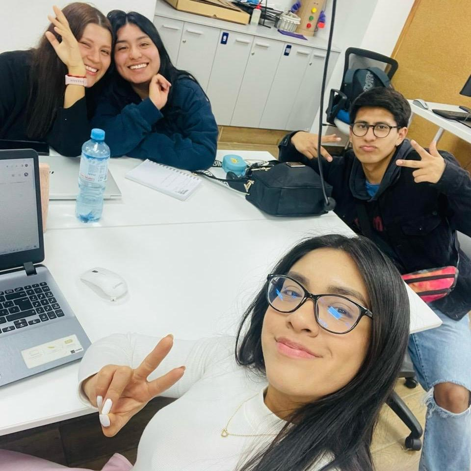

Proyecto Grupal
Somos un equipo diverso de cinco personas, cada una con una perspectiva única debido a nuestras diferentes carreras. Juntos, fusionaremos nuestras habilidades y conocimientos para abordar problemas desde múltiples ángulos y alcanzar un solución que marque la diferencia.
Nuestro equipo esta compuesto por :
✨Sujey Conde
✨Brizeth Epiquen
✨Alexander Gutierrez
✨Franchesco Manco
✨Kiara Pérez
Nosotros estamos comprometido con los Objetivos de Desarrollo Sostenible (ODS)
ODS 1: "Fin de la probeza"
ODS 8: "Trabajo decente y crecimiento económico"
ODS 11: "Ciudades y comunidades sostenibles"
ODS 12: "Producción y consumo sostenible"
Nuestro proyecto grupal busca abordar de manera innovadora la problemática de la "Dificultad de venta en la artesanía de los pueblos de Puno, Perú". Para comprender mejor esta situación, se realizo una encuesta que reveló cómo las personas apoyan las ventas artesanales, dónde hacen sus compras y cuáles son los motivos detrás de sus decisiones.
Participa en nuestra encuesta y contribuye a la búsqueda de soluciones innovadoras para abordar esta importante problemática. En colaboración con personas comprometidas como tú, estamos emprendiendo un esfuerzo para identificar ideas creativas y efectivas que resuelvan los desafíos que enfrentamos.
¡Únete a nosotros para conocer más sobre esta iniciativa y cómo puedes ser parte del cambio positivo en las comunidades artesanales de Puno!. 😀